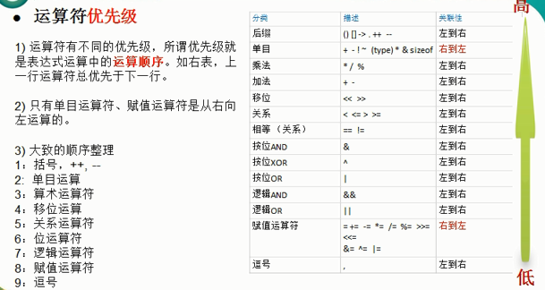

04_运算符
运算符¶
1 算术运算符¶
算术运算符主要是对数值型变量进行运算。比如加减乘除等。golang的算术运算符中没有乘方的运算，可以使用math.Pow(m,n)计算m的n次方。
注意事项：
- 如果要使结果为浮点型，则除数和被除数至少有一个为浮点数。
(1) 5 / 2 => 2 // 取整数部分，去掉小数部分，不是四舍五入。例如本例的2.5取值为2 (2) 5.0/2 => 2.5 (3) 5/2.0=> 2.5 (4) 5.0/2.0=> 2.5
- 除号两边的变量类型要一致，否则需要进行转换，包括兄弟类型也要转换。(常量是无类型的)
var n1 int8 = 25 var n2 int16 = 5 fmt.Println(n1 / n2) //invalid operation: n1 / n2 (mismatched types int8 and int16)
- Golang中取余的结果中的正负号与被除数一致。例如：
(1) 10 % 3 => 1 (2) 10 % -3 => 1 (3) -10 % 3 => -1 (4) -10 % -3 => -1
- Golang中，不存在
++i和--i的运算，而且i++和i--只能独立使用，不能将其赋值给一个变量。例如a := i++和i++ > 0的形式是不正确的。
(1) i++等价于i = i + 1 (2) i--等价于i = i - 1
2 关系运算符¶
- 关系运算符主要有==、！=、<、>、<=、>= 。
- 关系运算符的结果都是bool型的，也就是要么是true，要么是false；
- 关系运算符组成的表达式我们称之为“关系表达式”。关系表达式经常用在if结构的条件中或循环结构的条件中。也可以用在复制语句中，例如
flag := n1 < n2
3 逻辑运算符¶
-
逻辑运算符用来连接多个条件（一般为关系表达式），最终结果是一个bool型。
-
逻辑运算符主要有：逻辑与&&、逻辑或||、逻辑非！
示例：if a > 20 && b < 30 {}
-
逻辑与、逻辑或运算符都有短路特性。&&的短路表示如果第一个条件为false，后续的条件就无需再进行判断，最终结果就为false；||的短路表示如果第一个条件为true，则最终结果为true。
-
逻辑运算符使用的过程中，为了避免出现误解，我们可以使用小括号来进行优先级的明确。例如!((age < 30)
4 赋值运算符¶
赋值运算符 就是将某个运算的值赋值给指定的变量。
| 赋值运算符 | 描述 | 示例 |
|---|---|---|
| = | 简单的赋值运算符，将一个表达式的结果给一个左值 | C=A+B，将A+B表达式的结果赋值给C |
| += | 相加后再赋值给左值 | C+=A等价于C=C+A |
| -= | 相减后再赋值给左值 | C-=A等价于C=C-A |
| *= | 相称后再赋值给左值 | C=A等价于C=CA |
| /= | 相除后再赋值给左值 | C/=A等价于C=C/A |
| %= | 取余后再赋值给左值 | C%=A等价于C=C%A |
| 《位相关的赋值运算符》： | ||
| <<= | 左移后赋值 | C<<=2等价于C=C<<2 |
| >>= | 右移后赋值 | C>>=2等价于C=C>>2 |
| &= | 按位与后赋值 | C&=2等价于C=C&<2 |
| ^= | 按位异或后赋值 | C^=2等价于C=C^2 |
| |= | 按位或后赋值 | C|=2等价于C=C|2 |
5 其他运算符¶
-
取地址符：& var a int 取变量a的地址：&a
-
指针取值符： var a int 取指针变量a指向的变量：*a
说明：Golang不支持三元运算符。如果要实现三元运算符，可以通过if-else语句。
运算符优先级¶
